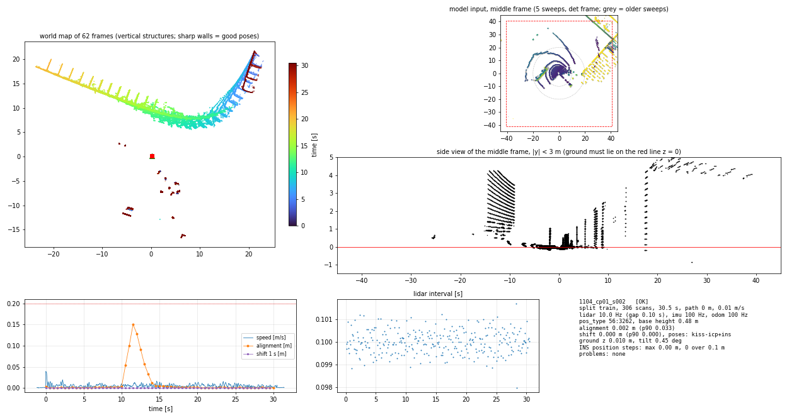
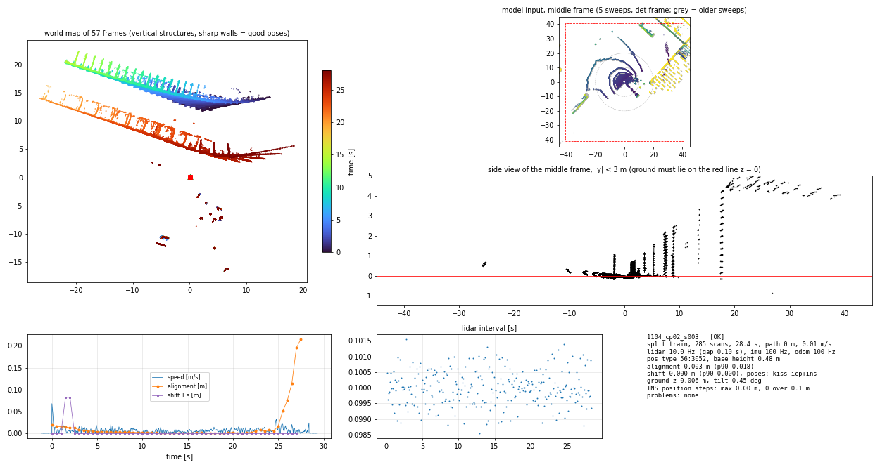
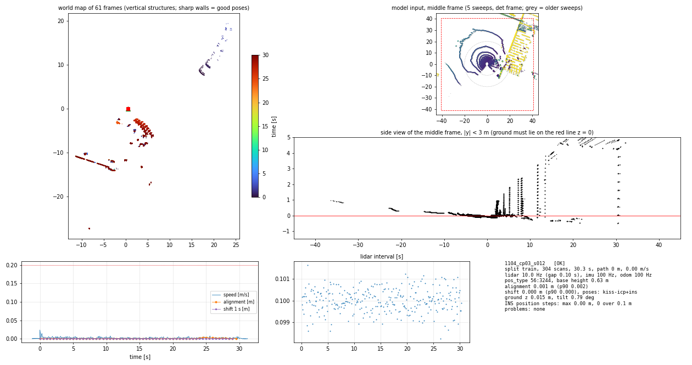
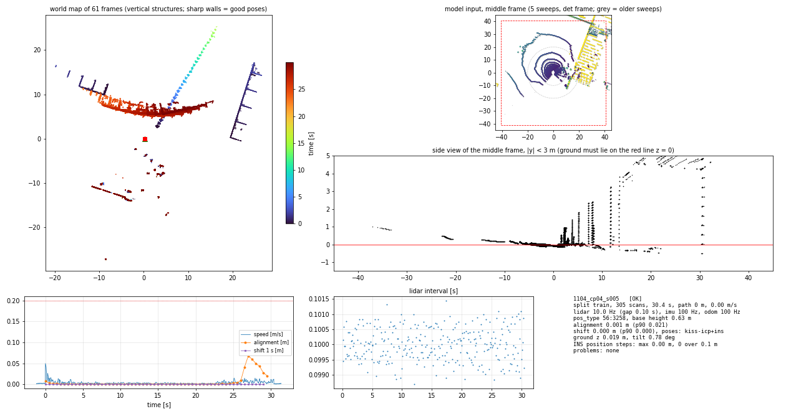

| name | status | split | scans | duration_s | path_m | mean_speed | pos_type | align_m | shift_p90_m | ground_z_m | tilt_deg | ins_step_m | pose_source | lidar_gap_s | problems | preview |
|---|---|---|---|---|---|---|---|---|---|---|---|---|---|---|---|---|
| 1104_cp01_s002 | OK | train | 306 | 30.500 | 0.286 | 0.005 | 56:3262 | 0.002 | 0.000 | 0.010 | 0.450 | 0.000 | kiss-icp+ins | 0.102 |  | |
| 1104_cp02_s003 | OK | train | 285 | 28.399 | 0.331 | 0.007 | 56:3052 | 0.003 | 0.000 | 0.006 | 0.447 | 0.000 | kiss-icp+ins | 0.102 |  | |
| 1104_cp03_s012 | OK | train | 304 | 30.299 | 0.140 | 0.003 | 56:3244 | 0.001 | 0.000 | 0.015 | 0.793 | 0.000 | kiss-icp+ins | 0.102 |  | |
| 1104_cp04_s005 | OK | train | 305 | 30.400 | 0.198 | 0.004 | 56:3258 | 0.001 | 0.000 | 0.019 | 0.776 | 0.000 | kiss-icp+ins | 0.101 |  |